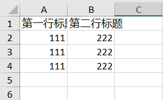
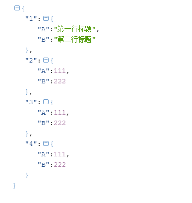

由于PHPExcel已经不再维护，PhpSpreadsheet是PHPExcel的下一个版本。PhpSpreadsheet是一个用纯PHP编写的库，并引入了命名空间，PSR规范等。这里简单介绍下PhpSpreadsheet的导入导出功能。
composer require phpoffice/phpspreadsheethttps://github.com/PHPOffice/PhpSpreadsheet
/**
* excel文件导出
*/
function export()
{
require_once __DIR__ . '/vendor/autoload.php';
$data = [
['title1' => '111', 'title2' => '222'],
['title1' => '111', 'title2' => '222'],
['title1' => '111', 'title2' => '222']
];
$title = ['第一行标题', '第二行标题'];
// Create new Spreadsheet object
$spreadsheet = new \PhpOffice\PhpSpreadsheet\Spreadsheet();
$sheet = $spreadsheet->getActiveSheet();
// 方法一，使用 setCellValueByColumnAndRow
//表头
//设置单元格内容
foreach ($title as $key => $value) {
// 单元格内容写入
$sheet->setCellValueByColumnAndRow($key + 1, 1, $value);
}
$row = 2; // 从第二行开始
foreach ($data as $item) {
$column = 1;
foreach ($item as $value) {
// 单元格内容写入
$sheet->setCellValueByColumnAndRow($column, $row, $value);
$column++;
}
$row++;
}
// 方法二，使用 setCellValue
//表头
//设置单元格内容
$titCol = 'A';
foreach ($title as $key => $value) {
// 单元格内容写入
$sheet->setCellValue($titCol . '1', $value);
$titCol++;
}
$row = 2; // 从第二行开始
foreach ($data as $item) {
$dataCol = 'A';
foreach ($item as $value) {
// 单元格内容写入
$sheet->setCellValue($dataCol . $row, $value);
$dataCol++;
}
$row++;
}
// Redirect output to a client’s web browser (Xlsx)
header('Content-Type: application/vnd.openxmlformats-officedocument.spreadsheetml.sheet');
header('Content-Disposition: attachment;filename="01simple.xlsx"');
header('Cache-Control: max-age=0');
// If you're serving to IE 9, then the following may be needed
header('Cache-Control: max-age=1');
// If you're serving to IE over SSL, then the following may be needed
header('Expires: Mon, 26 Jul 1997 05:00:00 GMT'); // Date in the past
header('Last-Modified: ' . gmdate('D, d M Y H:i:s') . ' GMT'); // always modified
header('Cache-Control: cache, must-revalidate'); // HTTP/1.1
header('Pragma: public'); // HTTP/1.0
$writer = \PhpOffice\PhpSpreadsheet\IOFactory::createWriter($spreadsheet, 'Xlsx');
$writer->save('php://output');
exit;
}结果：

/**
* excel文件保存到本地
*/
function save()
{
require_once __DIR__ . '/vendor/autoload.php';
$data = [
['title1' => '111', 'title2' => '222'],
['title1' => '111', 'title2' => '222'],
['title1' => '111', 'title2' => '222']
];
$title = ['第一行标题', '第二行标题'];
// Create new Spreadsheet object
$spreadsheet = new \PhpOffice\PhpSpreadsheet\Spreadsheet();
$sheet = $spreadsheet->getActiveSheet();
//表头
//设置单元格内容
$titCol = 'A';
foreach ($title as $key => $value) {
// 单元格内容写入
$sheet->setCellValue($titCol . '1', $value);
$titCol++;
}
$row = 2; // 从第二行开始
foreach ($data as $item) {
$dataCol = 'A';
foreach ($item as $value) {
// 单元格内容写入
$sheet->setCellValue($dataCol . $row, $value);
$dataCol++;
}
$row++;
}
// Save
$writer = \PhpOffice\PhpSpreadsheet\IOFactory::createWriter($spreadsheet, 'Xlsx');
$writer->save('01simple.xlsx');
}
/**
* 读取excel文件内容
*/
function read()
{
require_once __DIR__ . '/vendor/autoload.php';
$inputFileName = dirname(__FILE__) . '/01simple.xlsx';
$spreadsheet = \PhpOffice\PhpSpreadsheet\IOFactory::load($inputFileName);
// 方法二
$sheetData = $spreadsheet->getActiveSheet()->toArray(null, true, true, true);
return $sheetData;
}结果：

这是因为没有自动加载。可以手动引入加载文件。
require_once __DIR__ . '/vendor/autoload.php';或者：
require_once __DIR__ . '/vendor/phpoffice/phpspreadsheet/src/Bootstrap.php';
这是因为没有psr文件，缺少simple-cache模块。如果使用composer安装的话会自动生成。没有的话可以手动下载。
GitHub下载地址：https://github.com/php-fig/simple-cache/releases